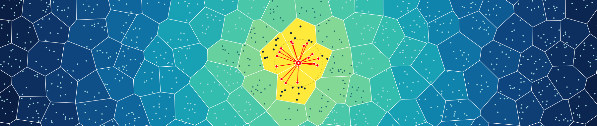

Hi! I am Mathis Randl, a PhD candidate in the SaCS lab at EPFL. I work on approximate vector search: the algorithms and systems that find nearest neighbors in large collections of embeddings.
My main projects start from the observation that real-world queries tend to look like each other. Proximity is a cache that reuses the results of similar past queries, and CatapultDB uses past queries to start graph searches closer to their destination.
I also collaborate on searching data that is spread over many owners (federated and decentralized search), and on measuring what privacy costs in vector search.
This website is meant to store my CV/resume, as well as archive papers, blog posts and announcements related to my professional works. Feel free to explore around!
You can also find me on LinkedIn, GitHub and Google Scholar.
(Authors typically listed alphabetically)
S. Bergman, A.-M. Kermarrec, D. Petrescu, R. Pires, M. Randl, M. de Vos, J. Zhang
Designed, programmed and benchmarked Proximity, an LSH-based cache that serves vector search queries before they reach the vector DB. It reduces the number of calls by more than 75% on workloads with real-world locality, with no loss in recall.
R. Guerraoui, A.-M. Kermarrec, D. Petrescu, R. Pires, M. Randl, M. de Vos
Earlier version (RagRoute) at EuroMLSys '25: slides, ACM (authorized link)
PhD Candidate in Computer Science at EPFL / Vector Search & RAG / Systems Programming. For research, see Publications.
Algorithms and systems for approximate nearest-neighbor search. Advised by Prof. Anne-Marie Kermarrec.
EPFL (GPA 5.58 / 6)
EPFL (GPA 5.10 / 6)
Organized campus talks, meetings and congresses (e.g. WESYP 2023) for the EPFL branch of IEEE. IT Manager since April 2023, Vice-President since September 2023.
Programmed and deployed a new Android-native national platform coordinating HIV-related healthcare information, in collaboration with the Zambian Ministry of Health.
Maintained the IT infrastructure for a campus music festival welcoming 15k+ people.
Mathis Randl. Toujours du meilleur goût.